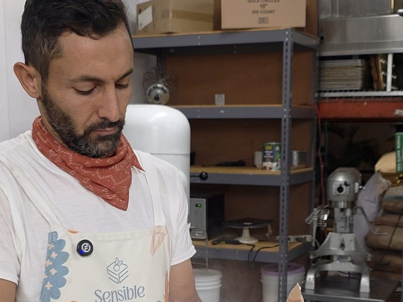
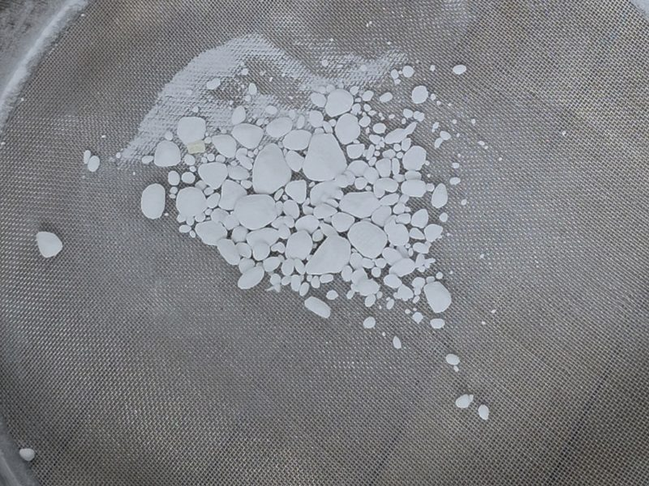
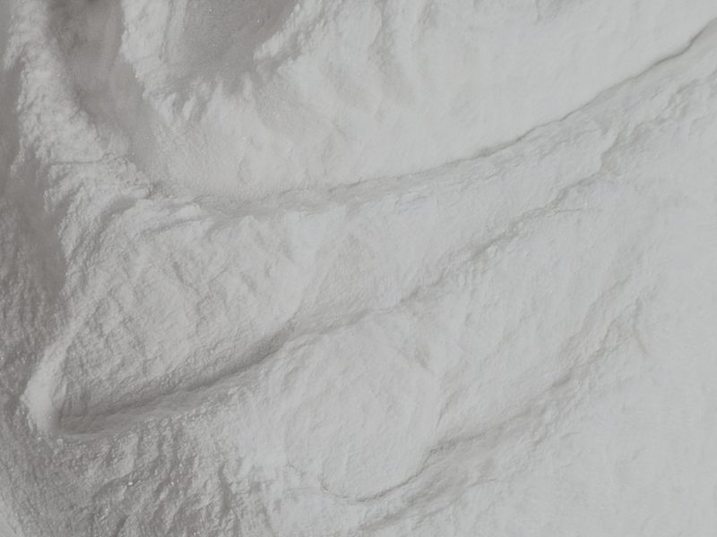

Why You Should Grind Down Your Baking Soda
Old baking soda clumps, and those clumps leave soapy pockets, dark spots, and uneven rise. Here's why it happens and how I break it down.
Baking soda feels indestructible. One box lasts what feels like forever, it's cheap, and it never smells off or grows anything. So it sits in the back of the cupboard for years — and that's exactly where the problem starts.
Pull an old box out and you'll usually find it isn't a loose powder anymore. It's gone lumpy, with little hard clumps packed through it. Most people scoop right past them and dump it in the bowl. Those clumps are quietly wrecking your bakes.
Why baking soda clumps in the first place
Baking soda (sodium bicarbonate) is mildly hygroscopic — it pulls moisture straight out of the air. Over time those water molecules cling to the fine powder and cake it together into clumps. The same property is why a box of it deodorizes your fridge: it grabs moisture and odor molecules out of the air around it.
That's great in the fridge and bad in your baking. An open box in a humid kitchen slowly absorbs both moisture and whatever smells are floating around. And here's the catch most people miss: baking soda doesn't spoil, so nobody throws it out. It just sits there for years, absorbing, clumping, and slowly weakening — long enough humidity even starts converting it to washing soda (sodium carbonate), which lifts less. It looks fine, so it stays in rotation way past its best.
What clumps actually do to your bake
Leavening only works if it's spread evenly through the batter. A clump is a concentrated pocket of soda sitting in one spot instead of dispersed through the crumb. That causes real, tasteable problems:
- Soapy, metallic bites. Baking soda is alkaline. An undissolved clump is a little pocket of pure base — bite into one and you get that sharp, soapy, bitter taste. There's no acid around it to neutralize it.
- Dark spots. Baking soda raises pH and speeds up browning. A clump browns faster than everything around it, so it leaves darker patches on cookies and cake.
- Uneven rise and spread. Where the soda is concentrated you get more lift; where it's thin you get less. Cookies spread unevenly, cakes dome or sink in patches.
- Off texture. That uneven leavening shows up as a patchy crumb instead of the tight, even structure you're after.

How I break it down
The fix takes about ten seconds. Get rid of the clumps before the soda goes anywhere near the wet ingredients.
- By hand: I rub the baking soda between my fingers over the bowl and crush the clumps back into loose powder. You can feel every lump give way.
- Through a sieve: or push it through a fine-mesh sieve, which breaks the clumps and aerates it at the same time.
Then — this part matters — whisk or sift it into your dry flour before it ever touches the wet batter. Dropped straight into a wet bowl, soda can re-clump and never fully dissolve. Distributed through the flour first, it ends up evenly spread through every bite.

Store it so it stays loose
Once you've broken it down, keep it that way. Move it out of the flimsy cardboard box and into an airtight container. That keeps humidity out so it doesn't cake back up, and keeps it from absorbing pantry and fridge smells — you don't want soda that tastes like last week's leftovers going into your cake. Sealed and dry, it stays loose and potent far longer.
And check that it's still alive
Since it doesn't visibly go bad, test it instead of trusting the box. Drop a spoonful into a splash of vinegar. Fresh soda erupts into a hard, fast fizz. A weak, lazy reaction means it's lost its strength — replace it. It's a few cents, and it's the difference between a bake that rises and one that doesn't.